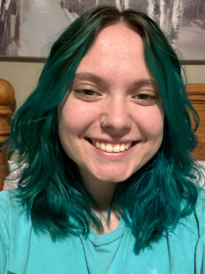

|

Graduate Student at Millersville University
|
Hello and welcome to Alyssa Warner's website portfolio for AEST 110- Communication and Information Systems. Alyssa is a graduate, post-bacc certification student at Millersville University, looking to work in the Technology Education field. She received her undergrad degree in Media Communications, with a Journalism minor, at the University of Delaware (UD) in 2021. Alyssa always wanted to teach, but truly found her passion when working as the Vice President of UD's Student Television Network and Co-Producer of the 49 News show. It took some time after graduation, and a dead-end customer service job, but Alyssa finally decided to pursue her dream and start the teaching certification process.
Once certified, Alyssa plans to work with high school students teaching digital media content, this is where her greatest passion in technology education lies. However, she knows life doesn't always go as planned, so she is keeping her options open and is thankful she will be certified in all aspects of tech ed. Alyssa is set to graduate with her certification in 2027, and will be on track for a masters degree as well, which she plans to finish when working in the field.
In her free time, Alyssa enjoys reading manga, watching anime or youtube, playing video games, listening to music and podcasts, crafting, and cooking. She recently moved out of her childhood home where her family dogs, Sam and Gibby, reside. You can see them on the Photo Project page! She misses them a ton but appreciates the time she gets to spend with them when visiting. Alyssa also has a love for marine life, she has a 20 gallon tank filled with fish, frogs and snails in her apartment.
Please take some time to check Alyssa's projects throughout the semester in her Communication and Information Systems class as she thoroughly enjoyed creating them. Stay tuned for future updates and announcements about her life.
|